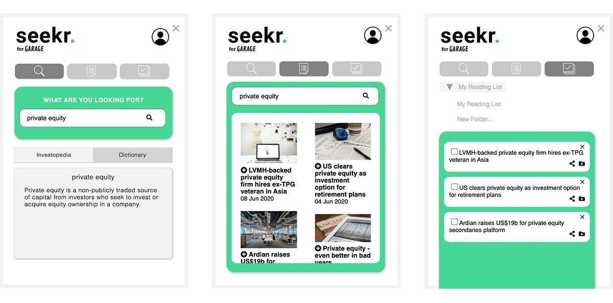
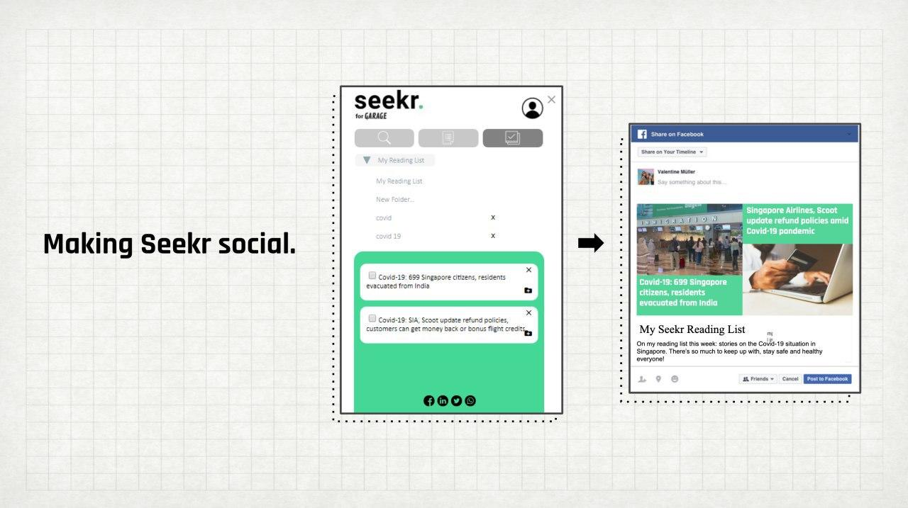

About the Product
Seekr is a Google Chrome extension that allows users to better connect with startup news by improving their understanding of business terms, expanding their knowledge of business topics by accessing the latest related articles, and organising the information however they need it.
Seekr aims to:
- Pique curiousity – it serves as a go-to tool to help tertiary students easily search and understand business jargon.
- Broaden perspectives – it is the key ingredient for tertiary students to better access and connect with topics in the start-up ecosystem.
- Manage information – it helps tertiary students get organised with new knowledge.

Key Features
- User walkthrough – The welcome screen provides information about the functions of the extension.
- Definition search – Users can type and search a term that they do not understand (eg. business jargon) and its definition will appear. Users can toggle between definitions provided by Investopedia or Dictionary.
- Related articles – The related articles tab brings users to a page that introduces them to news articles to the term they searched. The 'add' button allows them to bookmark articles for future reference.
- Reading list – Clicking on the checklist button will allow users to access their bookmarked articles. Here, they can check off and delete an article after reading it.
- Folder function – Users can create folders and organize articles for future reading.
- Sharing – Users can share articles on social media and messaging platforms.
Future Iterations
We hope to improve the product through further iterations: (1) Allow users to search for terms by simply highlighting words found in news articles (2) Enable push notifications to flag unread stories for users. (3) Introduce user accounts/guest modes to make news-reading more social.
Product Demo
Industry Mentor
Janie Octia from CrowdTangle@Facebook

The Team
The team is made up of passionate individuals from their key disciplines; they are never afraid to roll up their sleeves and dive deep into innovation.
- Journalists: Yeo Sze-G and Sherlyn Seah
- Designers: Esther Rim and Namita Kumar
- Developer: Goh Yong Wei